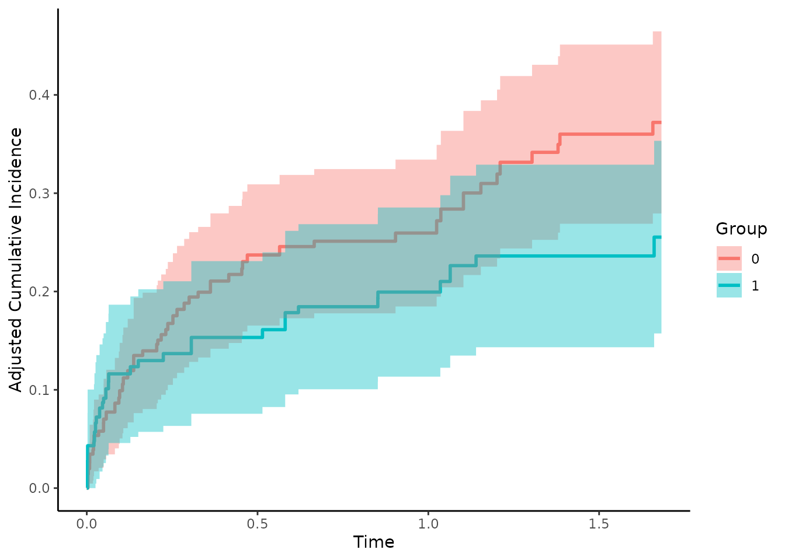
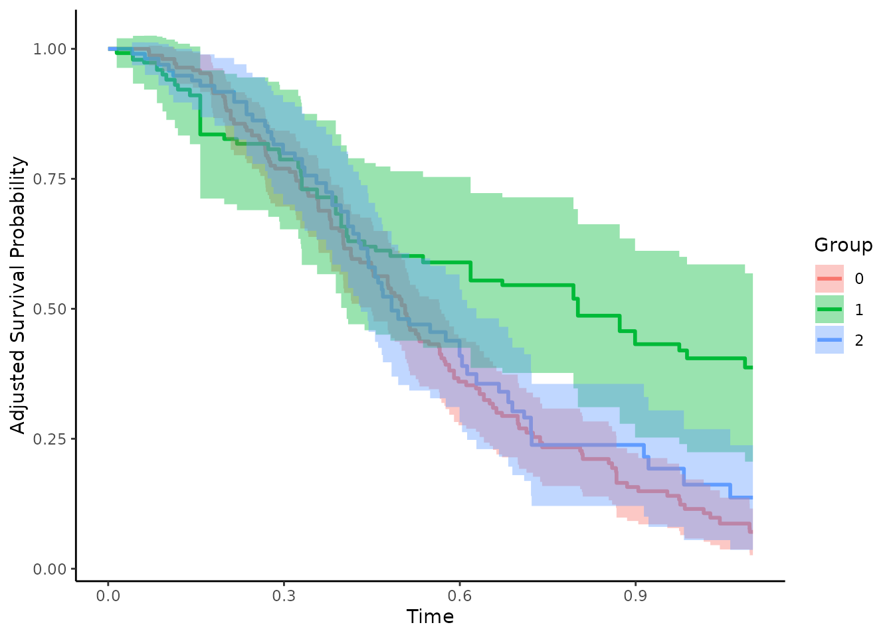

An Introduction to the 'adjustedCurves' Package
Robin Denz
Source:vignettes/introduction.Rmd
introduction.RmdThe main purpose of the adjustedCurves R-Package is to
estimate and plot confounder-adjusted survival curves and cause-specific
confounder-adjusted cumulative incidence functions (CIF) using a variety
of methods. Group- or treatment-specific survival curves and CIFs are
often used to graphically display the treatment (or group) effect on the
survival probability. When the data at hand comes from a randomized
controlled trial with balanced subgroups, simple stratified estimators
of the survival curves or CIFs ignoring other covariates are unbiased.
When randomization fails or was not done at all however, confounding can
lead to biased depictions (see Pearl 2009).
Luckily, a lot of different methods to adjust survival curves and
CIFs for confounding have been proposed. With the
adjustedCurves package, these methods can be used with
little effort. A review and simulation study comparing these methods can
be found in Denz et al. (2023).
Installation
A stable version of this package can be installed directly from CRAN:
install.packages("adjustedCurves")Alternatively, the developmental version can be installed from github
using the remotes package:
remotes::install_github("RobinDenz1/adjustedCurves")Further packages might have to be installed, depending on the specified method.
Adjusted Survival Curves
Let’s start with the standard survival setting. Using the
sim_confounded_surv function, we simulate some survival
data:
library(survival)
library(ggplot2)
library(riskRegression)
library(pammtools)
library(adjustedCurves)
# set random number generator seed to make this reproducible
set.seed(44)
# simulate standard survival data with 300 rows
data_1 <- sim_confounded_surv(n=300, max_t=1.1, group_beta=-0.6)
# code the grouping variable as a factor
data_1$group <- as.factor(data_1$group)
# take a look at the first few rows
head(data_1)## x1 x2 x3 x4 x5 x6 group time event
## 1 1 0 0 -0.52520986 0.22776621 -0.05319665 1 0.37181297 1
## 2 0 1 1 0.02441988 -2.16818274 0.58097459 0 0.65649863 1
## 3 1 1 1 0.05159071 0.07329185 1.18737651 1 0.08156474 0
## 4 1 0 0 0.01956631 -1.27205270 1.16594437 0 0.34161603 1
## 5 0 1 0 0.33793112 1.32447922 -1.28991227 0 0.52472847 1
## 6 0 1 0 -2.96505672 2.19434272 0.00528396 1 0.87274894 1Using the default arguments, this function outputs a data.frame with
6 independently drawn covariates (x1 - x6), a
binary group variable (group), the observed event time
(time) and the event indicator (event). In
this setting, there is only one type of event (1). When the
observations are right-censored this indicator is set to 0.
This is the standard data format used in standard time-to-event
analysis.
Direct Standardization
To calculate confounder-adjusted survival curves fo each group of
this dataset using Direct Standardization (also known as
G-Computation or Corrected Group Prognosis method, see
Makuch (1982) or Chang et al. (1982)), we first have to fit a model.
Here we will use a coxph model, but we could also use
pretty much any other kind of model.
# it is important to use X=TRUE in the coxph function call
outcome_model <- survival::coxph(Surv(time, event) ~ x1 + x2 + x3 + x4 + x5 +
x6 + group, data=data_1, x=TRUE)This model can then be used in a call to the
adjustedsurv() function, as shown below:
adjsurv <- adjustedsurv(data=data_1,
variable="group",
ev_time="time",
event="event",
method="direct",
outcome_model=outcome_model,
conf_int=TRUE)The argument data simply refers to our data.frame, the
argument variable specifies our grouping variable of
interest and the ev_time and event variable
specify the time-to-event variables in our data.frame. Setting the
method to "direct" will result in
G-Computation estimates, based on the previously fit cox-regression
model supplied using the outcome_model argument.
Doing this returns a list with some needed output objects. Most
important however is the adj data.frame in there,
containing the adjusted survival curves and corresponding confidence
intervals (because we used conf_int=TRUE in the original
function call). We can take a look at this object using the following
code:
head(adjsurv$adj)## time surv group se ci_lower ci_upper
## 1 0.00000000 1.0000000 0 0.000000000 1.0000000 1.0000000
## 2 0.01457659 0.9959356 0 0.004039858 0.9880177 1.0000000
## 3 0.04062032 0.9917639 0 0.005767859 0.9804591 1.0000000
## 4 0.04232678 0.9876128 0 0.007034862 0.9738247 1.0000000
## 5 0.06129069 0.9834495 0 0.008123567 0.9675276 0.9993714
## 6 0.06271999 0.9792709 0 0.009066121 0.9615017 0.9970402More importantly however, we can plot the survival curves directly
using the plot method:
plot(adjsurv)
This plot function comes with many options which are listed in the
documentation. To plot the point-wise confidence intervals, we can set
the argument conf_int to TRUE:
plot(adjsurv, conf_int=TRUE)
Many more custom settings, such as median survival time indicator
lines, censoring indicator lines and risk tables are available. For more
details and examples see ?plot.adjustedsurv or the
associated vignette, which goes in even more detail on how the plots can
be customized.
Inverse Probability of Treatment Weighting
The adjustedsurv() function essentially works the same
with every available method. Since the methods are however vastly
different in nature, some additional arguments have to be supplied by
the user. For example, using the Inverse Probability of Treatment
Weighting method (IPTW), we need to model the treatment assignment
mechanism instead of the outcome mechanism (see Xie and Liu
(2005)). This can be done in many ways. Below we use a logistic
regression model for exemplary purposes:
treatment_model <- glm(group ~ x1 + x2 + x3 + x4 + x5 + x6,
data=data_1, family="binomial"(link="logit"))
adjsurv <- adjustedsurv(data=data_1,
variable="group",
ev_time="time",
event="event",
method="iptw_km",
treatment_model=treatment_model,
conf_int=TRUE)The resulting curves can be plotted as before:
plot(adjsurv, conf_int=TRUE)
Since both methods were used correctly here, there are only slight differences in the results. Big differences between the two methods usually indicate that either the outcome model or the treatment-assignment model are incorrectly specified.
Augmented Inverse Probability of Treatment Weighting
Doubly-Robust methods can be helpful in such cases (Ozenne et al. 2020). The standard Augmented Inverse Probability of Treatment Weighting estimator utilized both kinds of models at the same time. If either of the models is correctly specified, the resulting estimates will be unbiased. It can be used in the same way as the other methods, only that this time both models have to be supplied. Using the same models as above we can use the following syntax:
adjsurv <- adjustedsurv(data=data_1,
variable="group",
ev_time="time",
event="event",
method="aiptw",
treatment_model=treatment_model,
outcome_model=outcome_model,
conf_int=TRUE)
plot(adjsurv, conf_int=TRUE)
Adjusted Cumulative Incidence Functions
In many situations there are multiple mutually exclusive types of events instead of just one event. This is formally known as a competing risks situation. In these situations, survival curves can not be estimated anymore. However, the cumulative incidence function can be used instead. Without randomization, these CIFs face the same problems due to confounding as the survival curves do. Many of the methods to adjust survival curves for confounders can be used to adjust CIFs in very similar fashion.
While the computational details and the underlying theory is slightly
different (see Ozenne et al. 2020), the syntax for the R-Package stays
pretty much exactly the same. The only major difference is that instead
of using the adjustedsurv() function, the
adjustedcif() function should be utilized. Additionally,
the user now also has to specify which event-type is of interest using
the cause argument.
First we need new example data, mirroring the competing risks
situation. We are going to use the sim_confounded_crisk()
function, which does the same thing as the
sim_confounded_surv() function, but with competing risks
data:
# simulate the data
data_2 <- sim_confounded_crisk(n=300)
data_2$group <- as.factor(data_2$group)
head(data_2)## x1 x2 x3 x4 x5 x6 group time event
## 1 1 1 0 0.96216812 -0.66375234 0.65527293 1 0.02085406 0
## 2 1 1 0 -0.58477811 1.73696566 -0.18714061 1 0.18924205 0
## 3 1 0 0 -0.33549773 0.52008044 0.08290031 0 0.26288996 2
## 4 0 1 1 -0.04008865 0.19841348 0.38858944 1 0.08210559 2
## 5 0 0 1 0.78936972 -0.27545174 0.49322272 1 1.67993934 2
## 6 0 0 0 0.26001387 -0.03590098 0.86231143 1 1.70000000 0Direct Standardization
Let’s again start with the Direct Standardization method.
Instead of using a simple coxph method, we need to use a
model for the time-to-event process which takes the multiple event-types
into account. One such method is the Cause-Specific
Cox-Regression model. A simple implementation of this model is
contained in the riskRegression R-Package.
outcome_model <- riskRegression::CSC(Hist(time, event) ~ x1 + x2 + x3 + x4 +
x5 + x6 + group, data=data_2)This model can then be used in a call to the
adjustedcif() function, as shown below:
adjcif <- adjustedcif(data=data_2,
variable="group",
ev_time="time",
event="event",
method="direct",
outcome_model=outcome_model,
cause=1,
conf_int=TRUE)
plot(adjcif, conf_int=TRUE)
This shows the confounder-adjusted CIFs for cause = 1.
By setting cause to 2 we get the
confounder-adjusted CIFs for the other cause:
adjcif <- adjustedcif(data=data_2,
variable="group",
ev_time="time",
event="event",
method="direct",
outcome_model=outcome_model,
cause=2,
conf_int=TRUE)
plot(adjcif, conf_int=TRUE)Inverse Probability of Treatment Weighting
The IPTW estimator can be used exactly the same way as we did with
the adjustedsurv() function:
treatment_model <- glm(group ~ x1 + x2 + x3 + x4 + x5 + x6,
data=data_2, family="binomial"(link="logit"))
adjcif <- adjustedcif(data=data_2,
variable="group",
ev_time="time",
event="event",
method="iptw",
treatment_model=treatment_model,
cause=1,
conf_int=TRUE)
plot(adjcif, conf_int=TRUE)
Adjusted Curves with More than Two Groups
In many applications there are more than two treatments. Some of the methods included in this R-Package allow calculations for an arbitrary number of treatments. In these cases the code does not change at all and can be used exactly in the same way as before. The only difference occurs when using IPTW methods. Here the user has to use a multinomial logistic regression model instead of a regular logistic regression to model the outcome. This is illustrated below.
First we again create a simulated data set (for single event survival data). The function is only able to create binary treatment variables, but we can simply resample all occurrences of 1 into 1 and 2, creating 3 treatments, where 1 and 2 have an identical treatment effect and selection process:
# add another group
# NOTE: this is done only to showcase the method and does not
# reflect what should be done in real situations
data_1$group <- factor(data_1$group, levels=c("0", "1", "2"))
data_1$group[data_1$group=="1"] <- sample(c("1", "2"), replace=TRUE,
size=nrow(data_1[data_1$group=="1",]))The Direct Adjusted survival curves can be calculated exactly as before:
outcome_model <- survival::coxph(Surv(time, event) ~ x1 + x2 + x3 + x4 +
x5 + x6 + group, data=data_1, x=TRUE)
adjsurv <- adjustedsurv(data=data_1,
variable="group",
ev_time="time",
event="event",
method="direct",
outcome_model=outcome_model,
conf_int=TRUE)
plot(adjsurv)For the IPTW based estimates we first fit a multinomial logistic
regression model using the multinom function from the
nnet R-Package and use it with the same code as before:
treatment_model <- nnet::multinom(group ~ x1 + x2 + x3 + x4 + x5 + x6,
data=data_1)## # weights: 24 (14 variable)
## initial value 329.583687
## iter 10 value 286.543657
## iter 20 value 283.765460
## final value 283.765313
## converged
adjsurv <- adjustedsurv(data=data_1,
variable="group",
ev_time="time",
event="event",
method="iptw_km",
treatment_model=treatment_model,
conf_int=TRUE)
plot(adjsurv, conf_int=TRUE)
Further Topics
Only a few methods and the most important functionality of this package were shown in this vignette. It includes a lot more methods and functionality, which is described in great detail in both the documentation and the other vignettes of this package.
Implemented Methods
For users who want to learn more about the implemented methods, we
recommend consulting the documentation of the main functions first
(?adjustedsurv or ?adjustedcif). This page
will also guide the user to more detailed method-specific information.
An overview of all implemented methods is given in the associated
vignette
(vignette(topic="method_overview", package="adjustedCurves")).
Plot Customization
The plot.adjustedsurv() function contains a lot of
arguments to customize the adjusted survival curve plots, which may be
daunting at first. The associated vignette
(vignette(topic="plot_customization", package="adjustedCurves"))
describes most of these options in great detail with multiple
examples.
Comparing Groups
Users may also be interested in formally comparing the (treatment)
groups after adjustment has been made. There are multiple ways to
perform such comparisons using this package for both standard
time-to-event data and data with competing events. A vignette explaining
what these different options are and how to use them is also included in
this package
(vignette(topic="comparing_groups", package="adjustedCurves")).
We recommend consulting this vignette if group comparisons are of
interest.
FAQ
Some of the most frequently asked questions are answered in the FAQ
vignette
(vignette(topic="faq", package="adjustedCurves")).
Literature
Robin Denz, Renate Klaaßen-Mielke, and Nina Timmesfeld (2023). “A Comparison of Different Methods to Adjust Survival Curves for Confounders”. In: Statistics in Medicine 42.10, pp. 1461-1479.
Judea Pearl (2009). Causality: Models, Reasoning and Inference. 2nd ed. Cambridge: Cambridge University Press
Robert W. Makuch (1982). “Adjusted Survival Curve Estimation Using Covariates”. In: Journal of Chronic Diseases 35.6, pp. 437-443.
I-Ming Chang, Rebecca Gelman, and Marcello Pagano (1982). “Corrected Group Prognostic Curves and Summary Statistics”. In: Journal of Chronic Diseases 35, pp. 669-674.
Jun Xie and Chaofeng Liu (2005). “Adjusted Kaplan-Meier Estimator and Log-Rank Test with Inverse Probability of Treatment Weighting for Survival Data”. In: Statistics in Medicine 24, pp. 3089-3110.
Brice Maxime Hugues Ozenne, Thomas Harder Scheike, and Laila Staerk (2020). “On the Estimation of Average Treatment Effects with Right-Censored Time to Event Outcome and Competing Risks”. In: Biometrical Journal 62, pp. 751-763.